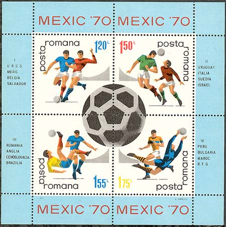
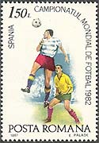
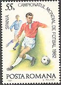
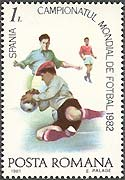
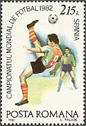
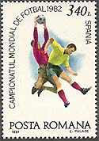
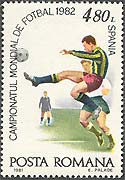
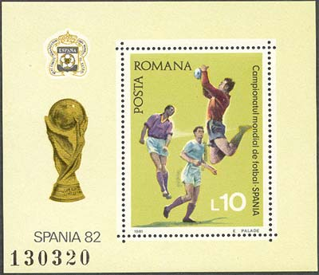

Romanian Football on Stamps
World Cup Championships - 1
Football (soccer) is, without any doubts, the most popular sport in Romania, and that for a long time. For the first time a Romanian national team participated at the World Cup in 1930, in Uruguay, when it won against Peru and lost against Uruguay. Its next participations was in 1934, in Italy, and in 1938, in France. No stamps were issued in order to commemorate these participations.
Unfortunately for all Romanian football fans, in the year 2002 their idols won't participate at the World Cup, and this after an uninterrupted participation since 1990 in Italy. This page and the next are thought as a kind of consolation and a remembrance of good old days.
The first set and sheet consecrated to the World Cup was issued in 1966 (see below the sheet, showing the Jules Rimet cup itself).

After the W.W.II, the Romanian football is present on the international arena since 1970, it's first qualification for the World Cup . This was in Mexico, and the below sheet reminds us this prestigious participation.

In a terribly difficult group (with England, Czechoslovakia and Brazil) Romania couldn't attain the semi-finals, but delivered very good matches. It lost against the England by 0-1, won against Czechoslovakia (2-1) and lost the last game against Brazil (2-3).
 |
 |
 |
The Mexicans especially appreciated the Romanian player Dembrovski and ordered a statue in his honor. Personally, I'll the terrible dribbling of another player, named Dumitrache, who knocked two English defenders one against the other, without having touched them.
 |
 |
 |
Please see above and below the nice set and sheet, issued in commemoration of the World Cup in Spain, for which Romanian team couldn't qualify.

Please point on stamps with the mouse for more information.
| Published:
05/23/2002. Revised: 05/23/02. Copyright © 2002 by Victor Manta, Switzerland. All rights reserved worldwide. |